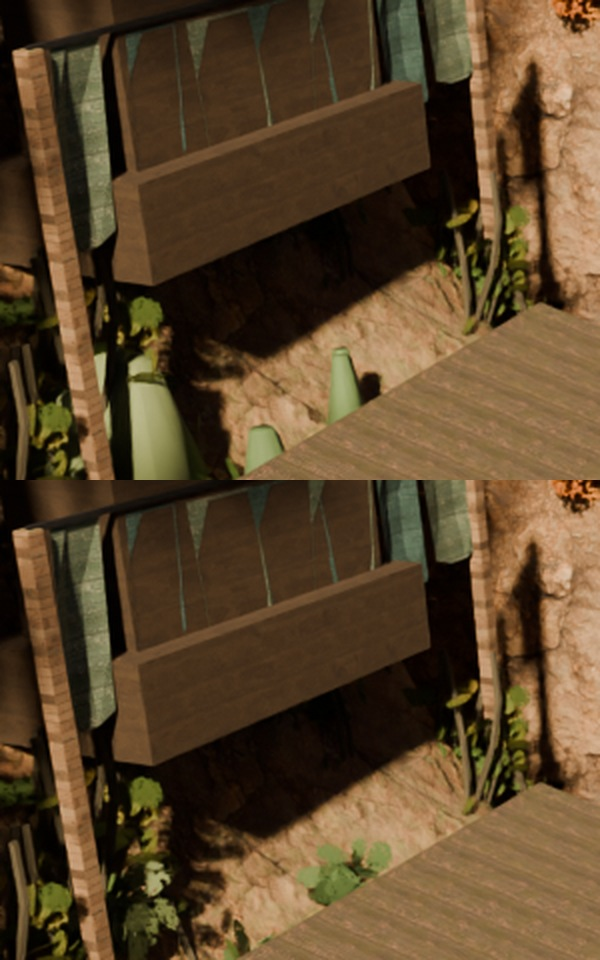
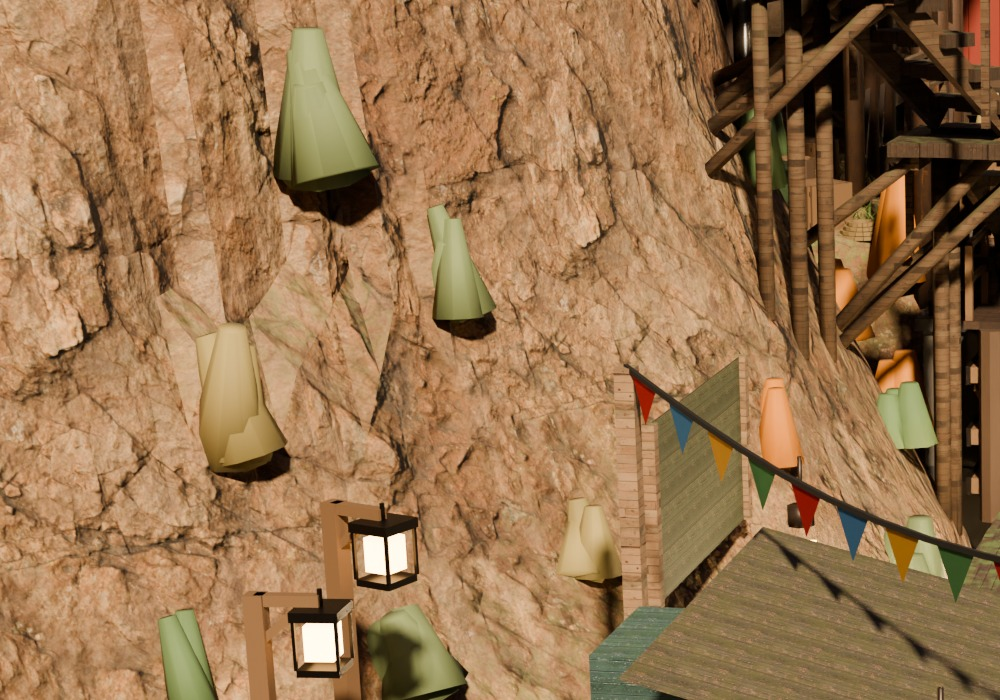
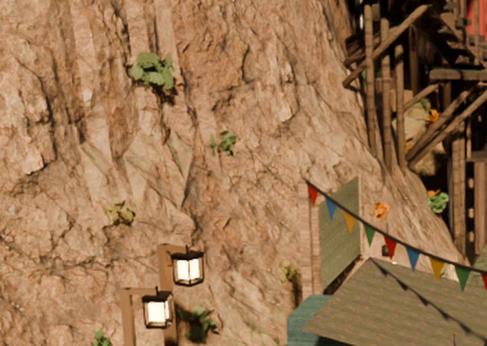
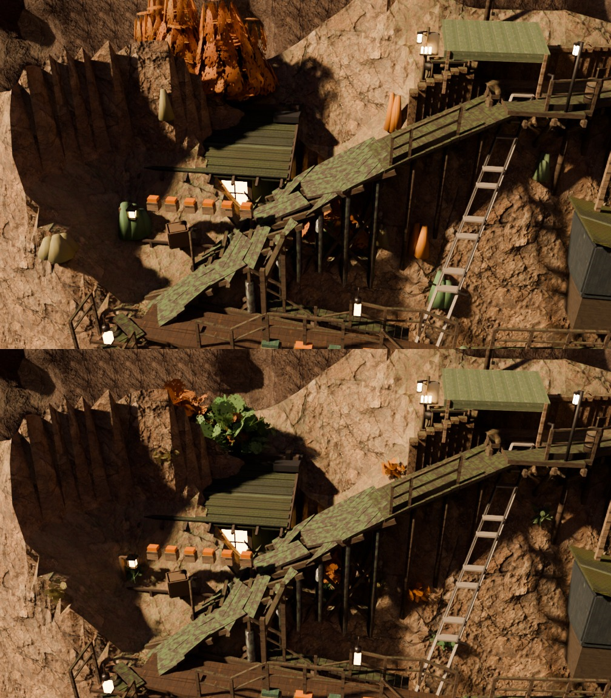
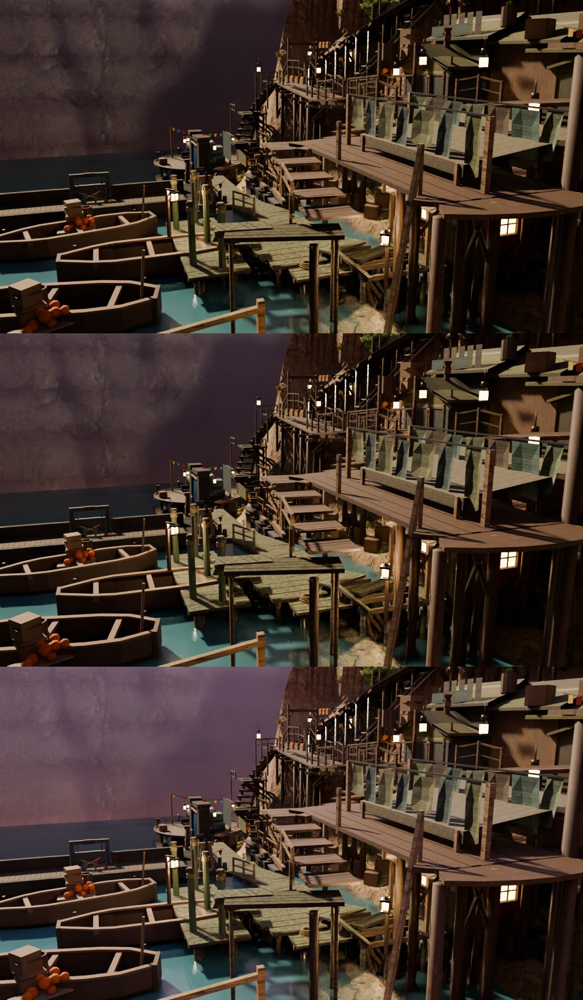

Carrier tools/dh_clump_kit.py. All footprint measurement off one
dh_objmap dump (15 cameras × 240×135 = 486,000 marched rays) read
against the shipped plates. Tone measurement is numpy on the rendered frames.
Round 11 recorded deep-stairs going 4 → 7 survivors with darkness 0 → 3 as unexplained. Re-judged at N=10 on both arms, same instrument, same cameras — the raw per-look finding rate is flat on every class:
| per look (N=10) | before | after |
|---|---|---|
| findings | 3.00 ±0.47 | 2.80 ±0.42 |
| dark / shadow / obscured | 1.50 | 1.60 |
| cave / pitch-black / void | 0.40 | 0.30 |
| floating / clipping | 0.80 | 0.80 |
The survivor count did move, 30 → 20, and all of it is stage 2:
0 of 30 refuted in the before arm against 7 of 27 in the after arm. A survivor count is
not a judge-language count. Bootstrapping N=3 out of these same twenty looks says
“after worse” on darkness 43.0% of the time (tie 34.9%) and on the total
11.3% — a per-camera phrase class at N=3 in this town is a coin flip, and round 11 drew one.
Runs: docs/qa/redteam/run-r12ds-{before,after}.
veg_nl_clump_* (×15) and veg_wv_clump_* (×74) are the
same object: three 9-sided tapered drums joined, 54 verts / 33 faces, on
lf_matte, built by two functions of one file
(weave_build.py 1567–1591 and 1726–1749). Nobody had put the two
together. lf_matte itself is not the subject — it is 14.85% of lockfive as barge
hulls, dam caps and bunting.
| camera | nl | wv | rim (T4) |
|---|---|---|---|
| north-landing | 2.80 | 0.42 | 0.25 |
| cottage | — | 2.08 | 5.24 |
| fishdock | — | 1.62 | 0.02 |
| deep-stairs | — | 1.08 | — |
| waterfront | — | 1.01 | — |
| weave | 0.06 | 0.90 | 0.68 |
| lockfive | 0.06 | 0.53 | 0.22 |
| lockhead | — | 0.42 | — |
| crossing | — | 0.20 | 0.72 |
% of frame, ray-derived.



v10_src_clump_a (184v/46f, h 2.099) and v10_src_clump_b
(112v/28f, h 1.216) sit hide_render in the master beside the tuft donors
dh_veg_kit already used, at uv area 1.00000 per face — round 10's own
number — and 63 healthy in-town clumps already wear those two signatures. So target 4 is a
copy, not authoring, and it shipped in the same carrier. The trunk is kept: only the
mat_leaf_autumn faces are replaced, the mat_timber_dark faces are
carried through.

And the geometry fix made a second defect legible, which is why the rim dye is re-derived and the drums' is not:
| family | Col luminance p05 / p50 / p95 | verdict |
|---|---|---|
| 63 healthy clumps (the kit) | 0.1501 / 0.1535 / 0.1617 | reference |
| 89 orphan drums | 0.1059 / 0.1309 / 0.1653 | in family — dye carried |
| 41 rim clumps | 0.3037 / 0.3061 / 0.3094 | 2.0× — dye re-drawn from the kit |
mat_leaf_green and mat_leaf_autumn were dumped node by node and
link by link and are identical — 17 nodes, 18 links, same two Color Ramps. The ramp
that looks like the autumn tint drives nothing: its Color output is unlinked, and the
only ramp reaching the shader is the cutout factor. Every autumn/green difference in this
town is carried by the vertex colour. The carrier asserts this rather than assuming it.
Four absurd-limit controls at 1008×576 / 28 spp on lockfive, shelf-west, deep-stairs and weave, then near (<25 m, the town) split from far (>60 m) through the objmap's own ray-derived distance.
| arm | whole-frame crushed% | near p05 | far L |
|---|---|---|---|
| base (sky 2.1, diffuse_bounces 4) | 18.32 | 1.8 | 41.6 |
| diffuse_bounces 4 → 32 | 18.32 | 1.8 | 41.6 |
| all 23 FILL_bounce / CLIFF_BOUNCE → 0 W | 19.02 | 1.4 | 41.6 |
| world Background → 0 | 24.01 | 1.4 | 24.4 |
| world Background 2.1 → 4.2 | 15.72 | 2.5 | 55.5 |
| world Background 2.1 → 8.4 | 11.87 | 3.5 | 79.0 |
crushed% is the four-camera mean; near p05 / far L are lockfive.
And every tonal number I had was blind to what it costs. Across the whole ladder p95 moves 137.0 → 142.4, blown pixels are identical at 0.147% on every rung including sky = 0, and chroma goes UP. The plate says otherwise: the far wall milks to a lavender fog bank, because the same world lights the volume cards round 6 tuned. A mid-tone wash is invisible to metrics that live at the tails.

The headline. Turn the sky and the entire bounce rig off and near-field
p05 falls 1.8 → 1.0; turn the sky up fourfold and it reaches 3.5. Every global ambient
term in this town put together is worth about two levels of 255 in the near field. The
near-field shadow floor is not reachable from any global parameter; it needs local
sources sized per region, which is the class dh_qm_underlight and
KEYW_CLIFF_ already belong to. Nothing was built here.
A .blend copied out of tools/blends/ renders MAGENTA. The
master's image textures are //../textures/…, relative to the blend, so a
backup at any other path loses 58 of its 60 textures — silently, with no error. The first
draft A/B arm of this round was rendered from such a backup and was not a baseline, it was a
different material set. An A/B arm must be rendered from a blend standing at the canonical
path.